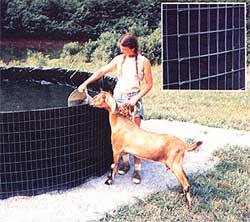

At relatively little expense and with a weekend's work, you can construct ...
I run what I like to refer to as an acre-and-a-quarter mini-farm in central Arkansas, and-even on my small spread-I've found that I need water storage facilities for the garden, livestock, and such. However, when I went to purchase a 1,000 gallon galvanized tank at the local farm supply house, its $200 price inspired me to design my own vessel ...and the result was so successful that I felt I had to share my "secret" with MOTHER's readers.
The method I use allows me to fabricate tanks of almost any capacity-up to 3,500 gallons-to suit the terrain and my needs ...and the cost of the 3' X 10', 1,762-gallon reservoir I've chosen to detail here is only about $34, a mere fraction of that of a commercial vessel of similar capacity.
To duplicate my tank, you'll have to take a trip to your local hardware or farm store (or lumberyard) and purchase [1 ] a 3' X 50' roll of 14gauge, 2" X 4" welded wire, [2] a roll of 3'-wide, 30-pound organic asphalt roofing felt (don't use roll roofing, which has a coating of rough pebbles on one side), [3] a 20' X 100' roll of 4-mil black Visqueen plastic, and [4] in case you don't already have them, some washed sand and a short length of stiff wire or coat hanger. (Of course, depending on the size of the tank you want to build, you may not use every foot of material purchased ...but you can save any leftovers for a second reservoir-or another project-in order to keep your cost-per-container down.)
After you've collected the material, begin leveling the area where you intend to set up your tank. Don't treat this step lightly, because if the ground isn't quite flat beneath the vessel, the container's restraining wire could warp under the water's weight. The best way to guarantee a level bed is to first mark off, using a central spike and a length of heavy cord, a circle of the desired diameter (in this case, ten feet). Then stretch another cord between two pegs driven into the ground opposite each other-at the circle's edge, and lay a carpenter's level along the string to determine how much the base might have to be reworked. By moving the pegs "around the clock" a few feet at a time, you'll eventually be able to even out the earthen foundation.
Once that's done, unravel the wire wall and prepare to cut enough material from the roll to assure that the tank's joining ends overlap by a foot or so (this can be determined beforehand by multiplying the vessel-to-be's diameter by 3.14 and adding 12 inches to the result). When you make your cuts, remove the vertical strand from the wire panel's right and left ends so that there are 2" horizontal "fingers" remaining at each border. With this done, stand the wire upright and position it, on your site, in as nearly perfect a circle as possible-bracing the material with wooden stakes every few feet around the perimeter to hold it in place-then connect the overlapped loose ends by twisting the 2" free strands around the nearest wire uprights (see inset photo above).
Now, line the wire "cage" with asphalt felt. If you want just one layer of protective wall (which is adequate for most situations) cut the material to allow a 12" overlap. On the other hand, if you're looking for extra puncture protection, you can wrap several thicknesses of felt within the frame. Either way, be certain that each layer goes full-circle and is snugged up firmly against the wire wall (hold it in place at the top with a small clip made from your heavy wire).
Next, push some earth up against the felt liner at its junction with the ground. Remove any sharp twigs or stones from within the newly formed border, tamp the earth down, and broadcast a thin layer of sand over the entire area. Then cut out an 11 ' X 11 ' section of Visqueen and center it carefully inside the tank, smoothing it out from the middle and pleating it every so often-as necessary-around its edge. Slice off the excess at the corners so it dresses out at the same height all the way around the container, taking care not to damage the felt in the process.
At this point, you'll need to cut a second piece of plastic-this one of full roll width and measuring 17 feet in length and place it in the tank over the first section, again centering it as accurately as possible. Begin filling the tank, but before the water is an inch deep, go around the container and-working from the outside -carefully pull out any severe wrinkles from the bottom of the liner. When the liquid is two to three inches in depth, push a couple of inches of soil up against the outside wall of the tank and tamp it with moderate pressure ...but don't force the felt wrapping away from the wall.
As the reservoir fills with water, pull the Visqueen sides upward in order to keep the pleats that form in the plastic relatively vertical and smooth, then-when the tank is nearly full-cut the liner material, leaving a three- or four-inch skirt above the top of the wall. To finish the job, merely fold this extra plastic border over the felt and tuck it between that asphalt skin and the welded wire wall (or between two layers of felt, if you used more than one).
I believe you'll find-as I did-that the completed water tank is pretty much impervious to all but a "direct hit" from a sharp object, and it should give you many years of trouble-free service under all but the most severe conditions. At any rate, considering its flexibility of design and ultra-low cost, I can't help referring to it as "a tank for the (hard!) times" .
EDITOR'S NOTE: Mr. Finley has worked up an 11-page set of plans (8-112" X 11 " format) detailing this and other methods of constructing wire/felt/Visqueen vessels of various sizes. If you are interested in some helpful hints, charts, and illustrations, send $5.00-along with your name and address to Ron Finley, Dept. TMEN, 32 Cedar Heights Road, North Little Rock, Arkansas 72118.
|
 This homebuilt cistern stores water for my garden and livestock, and is designed to give years of trouble-free service. INSET: The wire walls ""end loop"" fastening details. |
|
|